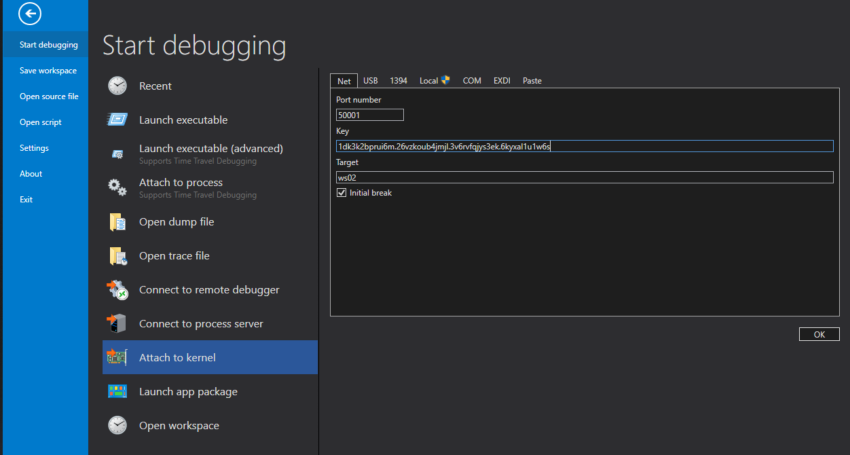
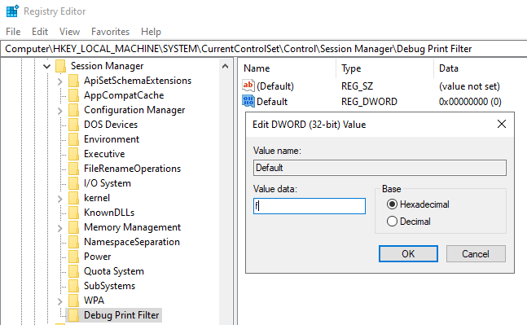
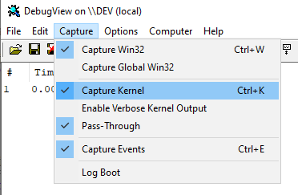
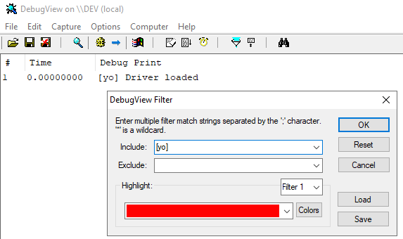

# Set a up a kernel debug environment
Tools:
•
WinDbg - actual debugger
•
DebugView - view debug output
•
WinObj - view loaded drivers
You can't debug the kernel on your own machine.
You're debugging the kernel, which means that your whole system will pause.
Kernel debugging requires 2 computers.
Traditionally, 2 computers were hooked up by a serial port and 1 would debug the other.
Nowadays, you can use virtual machines.
If you don't have access to virtual machines, there are ways to debug the kernel on 1 machine:
• using
Livekd by SysInternals -
https://samsclass.info/126/proj/p12-kernel-debug-win2008.htm• open minidumps at
C:\Windows\Minidump with WinDbg
## Use Livekd
•
https://samsclass.info/126/proj/p12-kernel-debug-win2008.htm## Use a Virtual Machine
•
https://www.ired.team/miscellaneous-reversing-forensics/windows-kernel-internals/configuring-kernel-debugging-environment-with-kdnet-and-windbg-preview•
https://docs.microsoft.com/en-us/windows-hardware/drivers/debugger/setting-up-a-network-debugging-connection-automaticallyIf you're already writing kernel drivers in a VM, or are planning to, just clone that VM.
Makes it easy because all the tools for debugging will already be on/configured for debuggee machine.
•
debugger machine - used for debugging (and probably where you write code oo)
•
debuggee machine - runs your kernel driver and gets debugged
On the debuggee machine, you use
kdnet.exe to generate a connection command.
On the debugger machine, you connect to the debuggee's kernel using the connection command.
You need
kdnet.exe.
kdnet.exe comes packaged with the Windows SDK.
On the debuggee machine, in an Admin prompt run
kdnet <ip of debugger machine> 50001The
-k is for kernel debugging
https://docs.microsoft.com/en-us/windows-hardware/drivers/debugger/setting-up-a-network-debugging-connection-automaticallyThis generates a cmd output with a key.
Note this down.
On the debugger host, open WinDbg and attach to the kernel using your port and key
You're now connected and can start debugging.
TO RESTORE (disable Kernel Debugging)In Administrator prompt:
bcdedit /debug offhttps://docs.microsoft.com/en-us/windows-hardware/drivers/devtest/bcdedit--debug## Enable DbgPrint output
Why this isn't enabled by default I have no idea
### in WinDbg
ed kd_default_mask 0xf### in DbgView
•
https://www.ired.team/miscellaneous-reversing-forensics/windows-kernel-internals/compiling-first-kernel-driver-kdprint-dbgprint-and-debugview#enable-dbgprint-monitoring-for-dbgviewRUN DBGVIEW AS ADMINISTRATOR TO CAPTURE KERNEL.
Create a sub-key
Debug Print Filter if it does not exist:
Computer\HKEY_LOCAL_MACHINE\SYSTEM\CurrentControlSet\Control\Session Manager\Debug Print FilterAdd a new DWORD value
DEFAULT and set its Data field to
0xfEnable Kernel capture
Capture > Capture KernelSet a filter so you don't catch everything
Edit > Filter